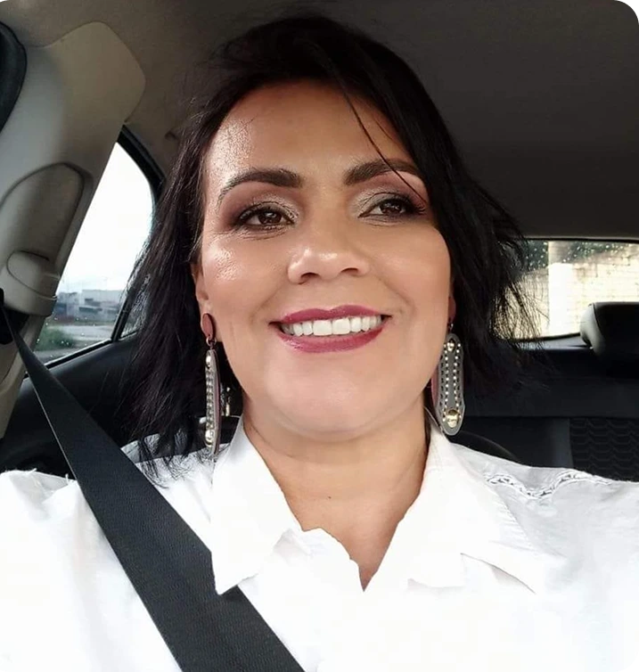
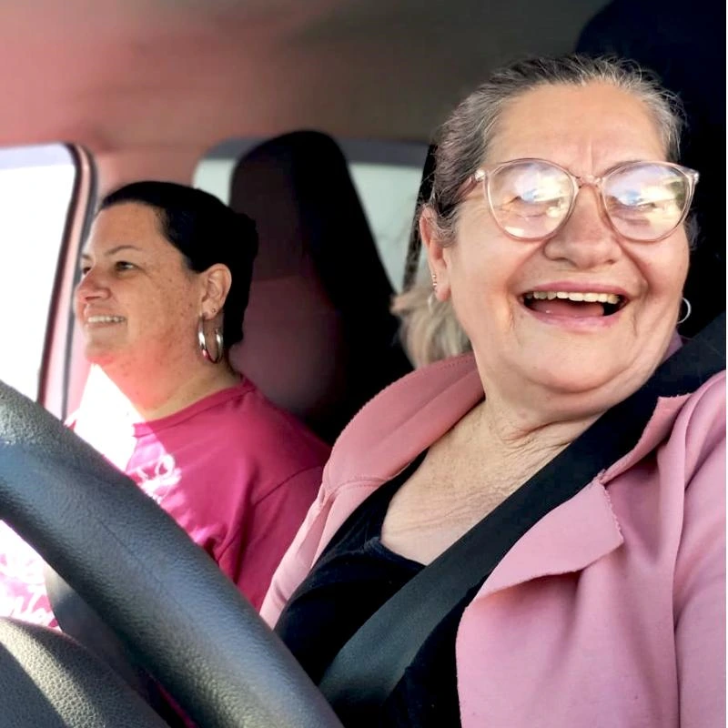
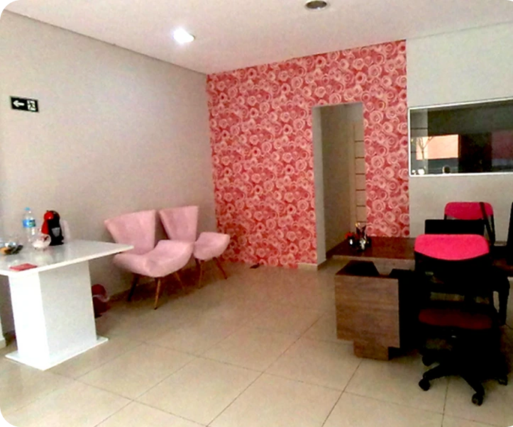
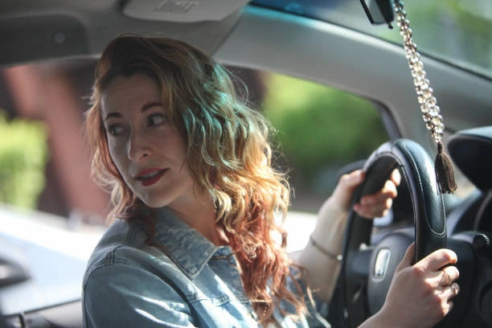

SOBRE NÓS
Uma história
de mulheres.
E de recomeços.
O Mulheres na Direção nasceu do desejo de Joana de ajudar mulheres habilitadas a enfrentar a insegurança e desenvolver suas habilidades ao volante.
Mais do que retomar a prática, é sobre abrir espaço para novos caminhos na sua rotina.
Conheça as aulas
DE MULHER PARA MULHER
Você não precisa
seguir sozinha.
Há mais de 10 anos, Joana realiza seu trabalho à frente do centro de treinamento. Mais de 2.000 mulheres com diferentes níveis de medo e experiências já passaram pelo Mulheres na Direção.
A proposta reúne prática de direção e acompanhamento de instrutoras mulheres para quem já tem habilitação.
Entenda o treinamento

DE AMERICANA PARA A REGIÃO
Perto de você,
em cada etapa.
O escritório fica em Americana. As aulas têm atendimento a domicílio, com busca em casa ou no trabalho nas cidades atendidas.
Campinas, Valinhos, Hortolândia, Paulínia, Sumaré, Nova Odessa, Americana, Santa Bárbara d’Oeste, Jundiaí e Várzea Paulista.
Converse com a equipeVAMOS ESCREVER O PRÓXIMO CAPÍTULO?
O seu caminho
começa com você.
Conheça o treinamento e tire suas dúvidas com a equipe.
Quero conhecer as aulas